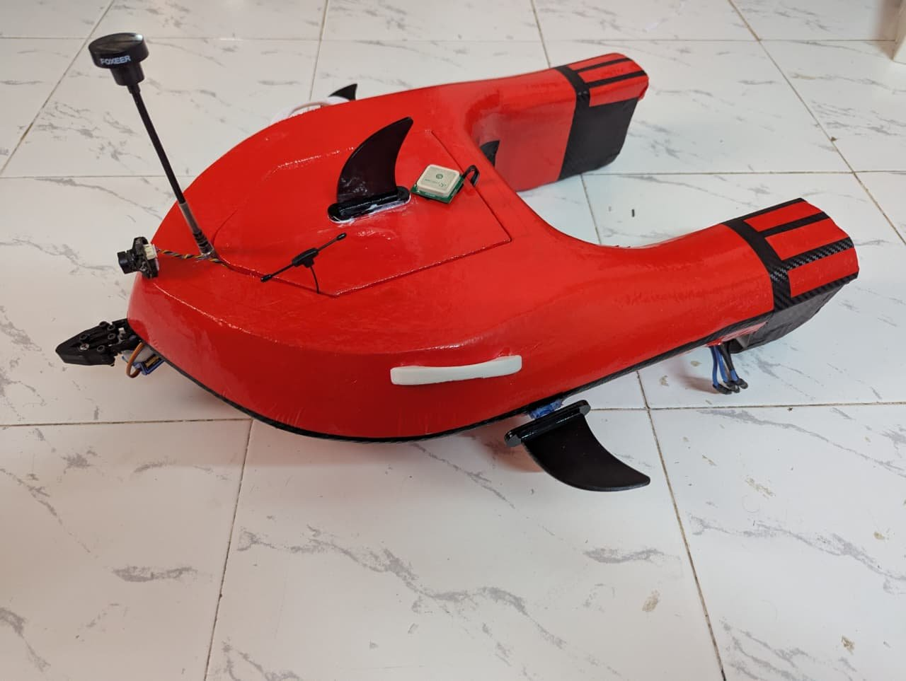

AquaBot — Rescue & Surveillance Rover
A remotely operated and autonomy-capable rover for rescue and surveillance tasks. The platform integrates an ArduPilot flight-controller stack for navigation and control, a telemetry link to the operator, live FPV video, and servo-driven robotic mechanisms on a custom 3D-printed structure.
FIG. 01 — SYSTEM ARCHITECTURE

AQUABOT PROTOTYPE ↗TECHNICAL SPECIFICATION
- Class
- Rescue / surveillance rover
- Control modes
- Remote and autonomous
- Autopilot
- ArduPilot
- Navigation
- GPS-based
- Propulsion / steering
- Differential thrust
- Payload / actuation
- Servo & robotic mechanisms
- Situational awareness
- FPV video
- Fabrication
- Custom 3D-printed parts
Engineering scope
- Autopilot configuration for rover-class operation, including GPS navigation and mode logic for manual and autonomous control.
- Telemetry integration so vehicle state and commands are exchanged with the operator station.
- Electrical integration of drive, servo, video and navigation subsystems into one platform.
Technical focus
- Differential thrust — steering through independent left/right drive output rather than a dedicated steering linkage.
- Mechanism design — servo-actuated robotic mechanisms, with custom parts designed in CAD and 3D printed.
- FPV operation — video link for remote situational awareness during rescue and surveillance use.
ArduPilotGPS navigationTelemetryFPV videoDifferential thrustServo mechanisms3D printing